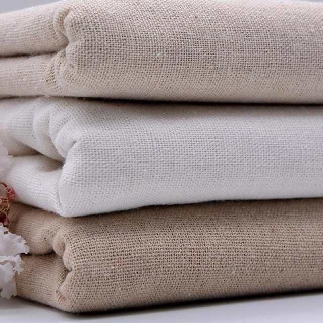

Dec 01, 2021
The stylelife about linen.
If you’ve never felt linen before, either as clothing or home textiles, you’re in for a treat! We
think it’s one of the most comfortable, appealing and endlessly useful fabrics around. Read on to
discover how it feels to wear, sleep under or use linen. Linen allows heat to escape away from your
body, so if you’re wearing linen clothing or sleeping in linen sheets you feel more comfortable. But
it will also keep you warm and cozy in winter, avoiding the uncomfortable overheating you can get
from synthetic materials. If you suffer from skin sensitivities you may find linen the most
comfortable of all fabrics. It has inherent antimicrobial properties, keeping infections and
inflammation at bay, as well as being hypoallergenic so it doesn’t exacerbate eczema or similar skin
problems. Linen is a timelessly elegant, effortlessly stylish material for clothing. Every summer
wardrobe needs a flowy linen dress or cool shirt, and in winter a linen scarf will keep you cozy
without being bulky or stuffy.

Nov 24, 2021
What exactly is sustainable fashion and why is so important.
There’s so much confusion as to what sustainable fashion is, that having a comprehensive guide on
the matter is paramount. With a carbon footprint accounting for over 10% of the global greenhouse
gas emissions, there’s no secret that the fashion industry is destroying the environment. A change
is much needed, from creating more awareness towards sustainable fashion practices to taking an
active role in making a change. Fortunately, positive changes in the fashion landscape are
happening; more ethical brands, customers demanding sustainable clothing brands, and even a
dedicated ethical clothing search engine. Glorious achievements, as changes do not come easy – not
in the fashion industry. Any change that deviates from the industry’s economic projections is
rejected or at best, postponed. The only viable solution is a slow shift from fast to sustainable
fashion, but…without impacting finances too much.
Nov 17, 2021
Nature and concrete.
High fashion takes inspiration from all sources, from the natural world to fine art. But perhaps
there is no better synergy than that between fashion designers and architects. While architecture
gives us the spaces we live and work in, high fashion is constructed to give us wearable art.
Designers who dabble in architectural fashion use their materials as building blocks, constructing a
wearable form in the same manner architects utilize concrete, cement, and glass to build up their
structures. Fashion giants such as the late Pierre Balmain and Gianfranco Ferré even come from an
architecture background. Balmain was clear in his enthusiasm for incorporating architectural
elements into his designs, stating “dressmaking is the architecture of movement.”